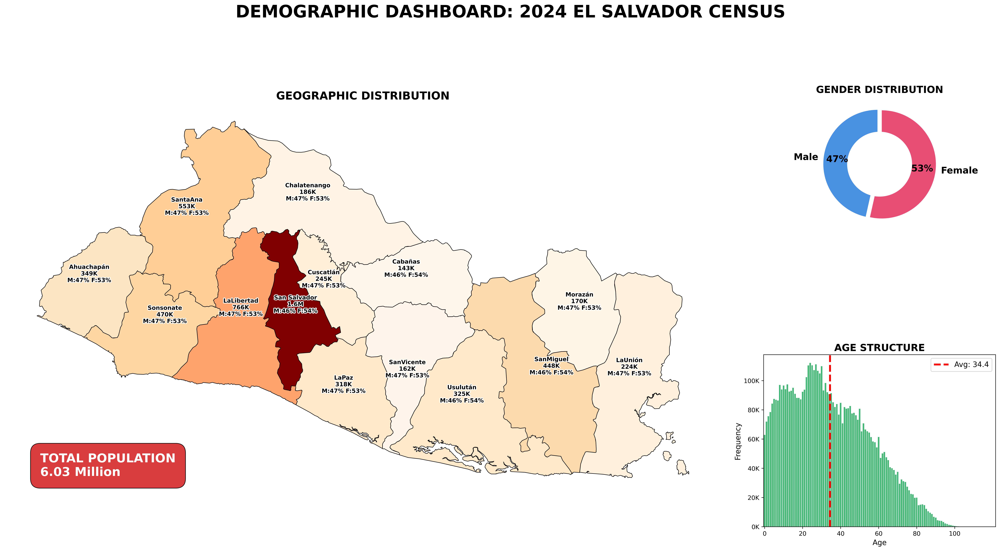
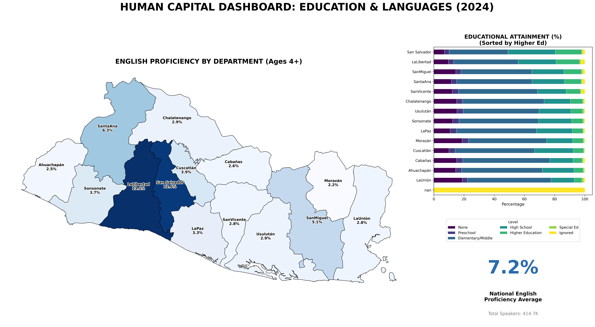
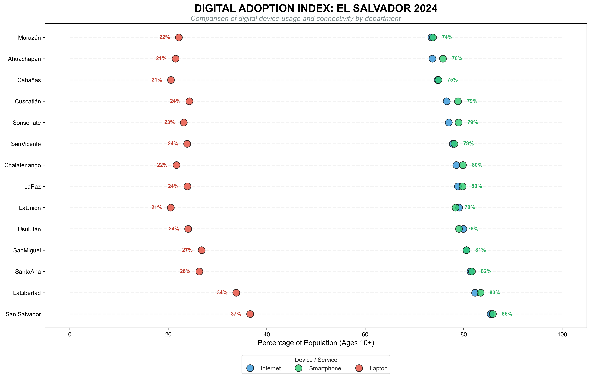

2024 El Salvador Census Analysis
Big Data Processing & Strategic Data Visualization
Introduction
This report presents key findings from the 2024 Population and Housing Census. The analysis focuses on demographic distribution, human capital, and digital adoption, leveraging microdata processed entirely with Python and R.
1. Demographic Profile: National Distribution
El Salvador’s population stands at 6.03 million, with a significant concentration in the country’s central region. The following dashboard details the geographic distribution by department, gender composition, and age structure (population pyramid).

2. Human Capital: Education & Bilingualism
Human capital is the engine of economic development. This analysis reveals a clear correlation between access to higher education and English language proficiency, highlighting San Salvador and La Libertad as the primary hubs for highly skilled talent.

3. The Digital Divide: Connectivity vs. Productivity
While internet access exceeds 70% in most departments, a critical gap remains in personal computer (laptop) ownership. This disparity suggests high digital consumption via smartphones, but poses a challenge for desktop-based productivity and specialized technical work.

Technical Conclusion
This project demonstrates an end-to-end Data Science workflow designed for high-stakes decision making:
- Extraction: High-volume processing of raw census microdata.
- Transformation: Data cleaning and normalization of geographic entities.
- Visualization: Generation of high-resolution static dashboards (
400 DPI) for executive reporting. - Deployment: Integration into a Quarto environment for professional web publishing.